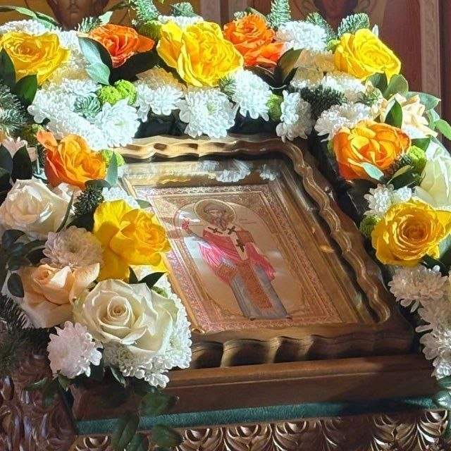

г. Енакиево
Свято-Спиридоновский храм
Официальный сайт прихода
О храме
Добро пожаловать
Здесь разместим краткое обращение прихода, историю храма, сведения о настоятеле и другую информацию.
Расписание
Богослужения
Поминовение
Подать записку онлайн
Выберите вид записки, укажите имена и перейдите к оплате. Заявка после оплаты направляется на почту прихода для проверки.
Контакты
Как нас найти
Адресг. Енакиево, ул. Фильтровальная, 5Адрес находится на уточнении.
Телефон+7 (___) ___-__-__Номер на уточнении...
Почтаkhram2015@inbox.ruПо всем вопросам о богослужениях, требах и жизни прихода.